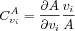

A control coefficient is a relative measure of how much a perturbation on a parameter affects a system variable (e.g. fluxes or concentrations). It is defined [
Kacser73 Heinrich74 Burns85] as:

where
A is the variable,
i the step (enzyme) and
v the steady-state rate of the perturbed step. The most common control coefficients are those for fluxes and species concentrations, but any variable of the system can be analyzed with MCA and have control coefficients defined by equations analogous to equation 1. In fact, there is no need even for the system to be in a steady state. COPASI only calculates directly the steady-state concentration- and flux-control coefficients, those for other variables can still be estimated by simulating small perturbations.